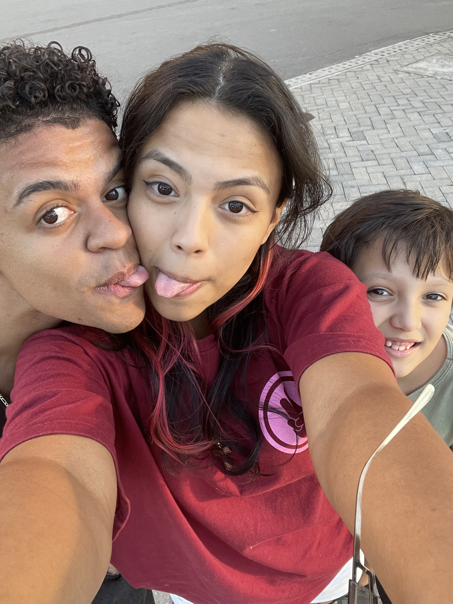
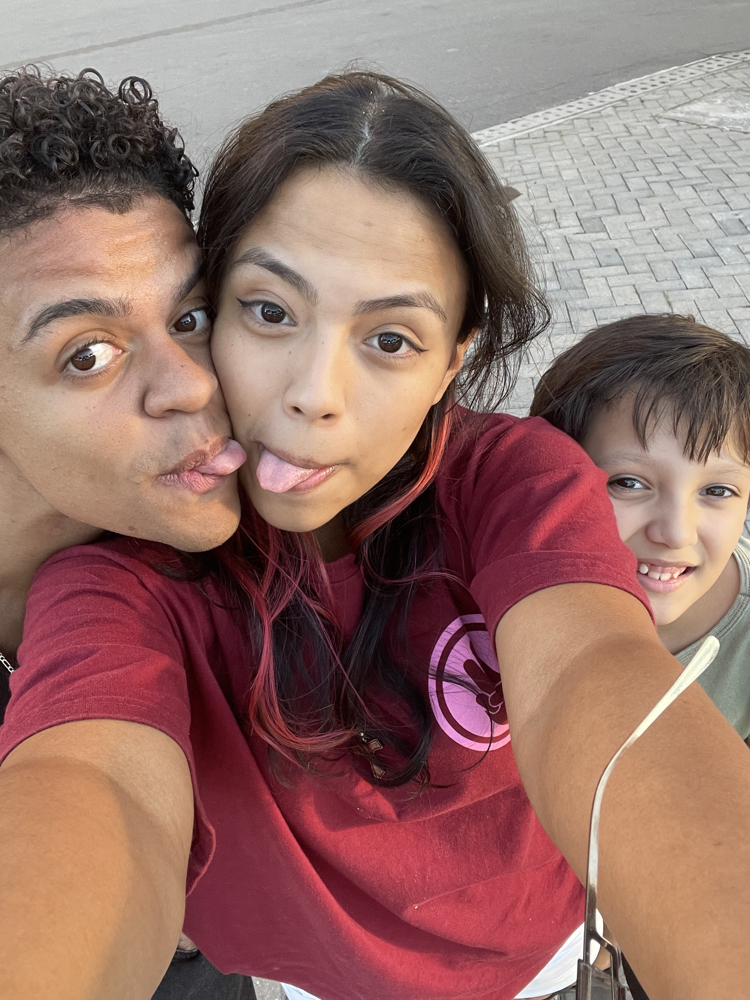

No vai e vem do mar, eu aprendi a te amar,
Com um sorriso de estrela a me guiar,
Teus olhos, dois faróis no escuro do mundo,
Num só olhar, tudo ficou mais profundo.
Me lembro do som da tua respiração,
Quando adormeceu ouvindo meu violão,
Foi como se o tempo parasse por ti,
Paçoca da minha vida, rubi que escolhi.
Teus cabelos, Marte em tom encantado,
Tua pele, obra-prima num tom abraçado,
Se eu tivesse sete vidas pra recomeçar,
Em todas elas eu viria te encontrar.
Fogo sou eu, água é você,
Mas mesmo opostos, conseguimos viver,
Num universo só nosso, tão lindo e sincero,
Te quero pra sempre, e é tudo que espero.
 
